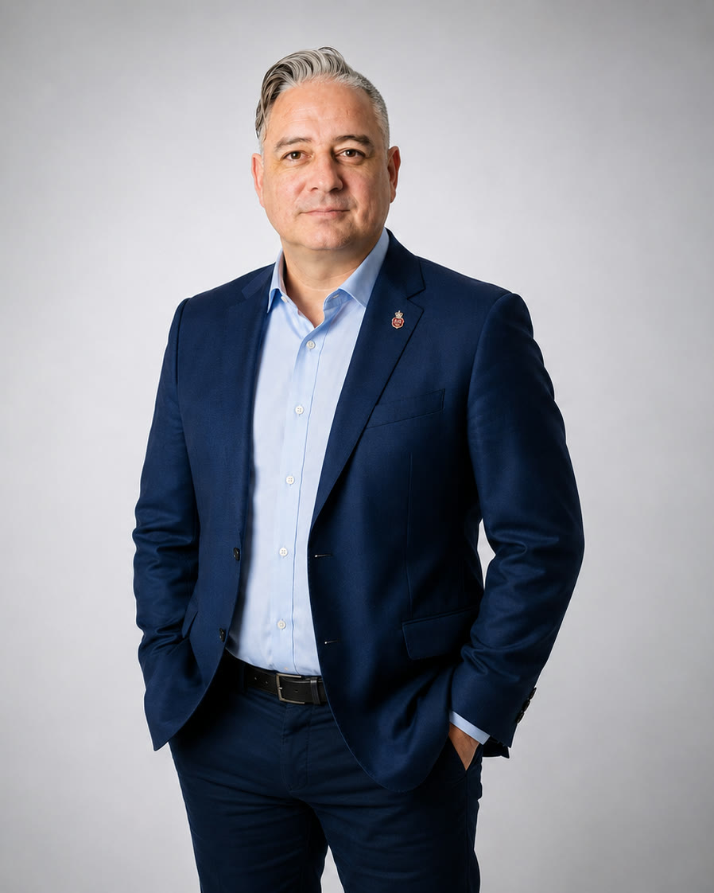
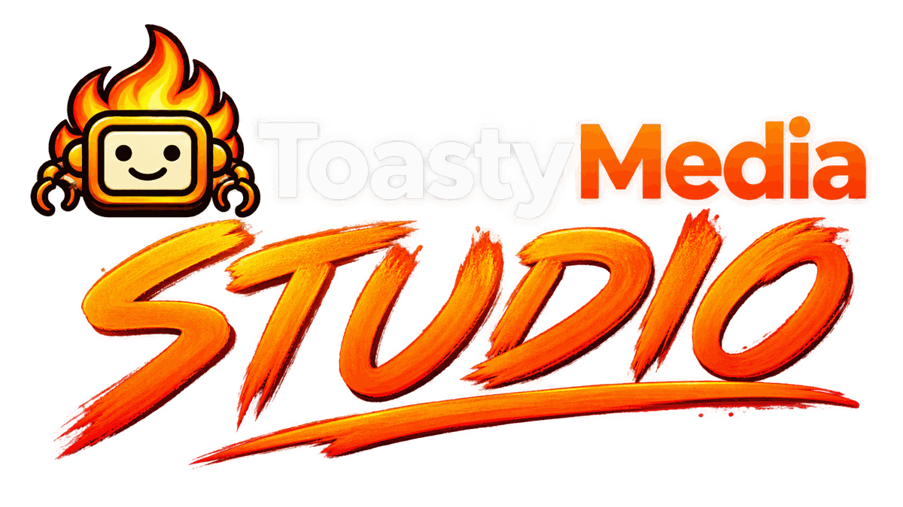

Technology
Enterprise technology
Communications and collaboration, advanced networking, managed IT services, M2M and SCADA systems, and machine learning.
Builder · Executive · Author · Curious human
More than two decades helping large enterprises adopt advanced technology, from communications and collaboration to enterprise networks, managed IT, industrial connectivity, M2M, SCADA, machine learning and AI. Today I build AI products, develop businesses, study human behavior and create original media.

01 / Experience
My career has centered on large enterprise technology: connecting organizations, modernizing how their people collaborate, and bringing sophisticated infrastructure and managed services into the business. That work spans enterprise communications, advanced networks, cloud and managed IT, industrial connectivity, M2M, SCADA, machine learning and emerging technologies. I've led commercial strategy, solution development and partnerships, including government RFP strategies with a strong win record. Today that experience informs my work in AI, product development and human-centered technology.
Communications and collaboration, advanced networking, managed IT services, M2M and SCADA systems, and machine learning.
Enterprise account strategy, complex solution development, RFPs, partnerships, positioning and translating technical capabilities into commercial outcomes.
Building and advising on tools that bring AI into business processes while accounting for how people actually think, decide and work.
02 / Selected work
AI consulting and organizational transformation.
Explore ↗CRM and intelligence grounded in human dynamics.
Explore ↗AI and agent technology.
Explore ↗
Tools and original programming for creators, podcasters and people making things together.
Explore Studio ↗Talent discovery and human connection for the agent economy.
Explore ↗Helping people navigate travel, relocation and everyday life in Thailand.
Explore ↗Human-centered behavioral companions, context, memory and interaction.
Learn more ↗Legal precedent, evidence and judicial reasoning.
Learn more ↗Communication, presence and persuasion.
Explore books ↗03 / Beyond the job title
Provincial recognition for contributions to the community.
Federal recognition of community leadership.
Documentary filmmaking through TELUS STORYHIVE, exploring grassroots soccer and community.
Watch documentary ↗04 / How I work
My work spans North America and Southeast Asia. I build AI products, study human behavior, develop businesses and create original media. From Toasty Media and its creator tools to Santati's human-centered intelligence, AI transformation through 8ALTA and independent products such as Get Thai'd Down, the thread is the same: stay curious, challenge assumptions and turn ambitious ideas into things people can actually use.